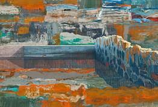

2011 Exhibitions

November 2011
Gallery I John Schulz
Gallery II Rick Zonghi
October 2011
Gallery I Nan Freeman
Gallery II Karmimadeebora McMillan
September 2011
Paul Stopforth
September 9 - 30, 2011
about the exhibition
 August 2011
August 2011
ArtSpeak!
August 5- 26, 2011
about the exhibition
July 2011
Ecstasy and Common Sense
July 6- 30, 2011
about the exhibition
June 2011
PLACE
June 3- 26, 2011
about the exhibition
 May 2011
May 2011
Robert Baart - Recent Paintings and Drawings
May 6- 28, 2011
about the exhibition
 April 2011
April 2011
SMFA Thesis Exhibition: Here We Are Who Cares!
April 1- 23, 2011
about the exhibition
March 2011
Therese Zemlin In the Spirit of the Chambered Nautilus
March 4- 19, 2011
view exhibition